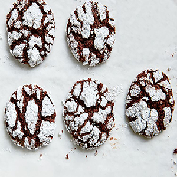

Salted Caramel Pie
This supereasy caramel lovers' dream pie is from Simplethings Sandwich & Pie Shop in Los Angeles. The filling is sweetened condensed milk sprinkled lightly with sea salt and baked until thick and gooey, then chilled in a simple graham cracker crust.
- 1 1/4 cups graham cracker crumbs (about 5 ounces)
- 4 tablespoons unsalted butter, melted
- 1/4 cup light brown sugar
- Two 14-ounce cans sweetened condensed milk
- Fleur de sel
- 2 cups heavy cream
- 2 tablespoons confectioners' sugar
- Preheat the oven to 350°. In a food processor, pulse the graham cracker crumbs with the melted butter and light brown sugar until the crumbs are moistened. Press the crumbs evenly into a 9-inch glass or metal pie plate. Bake for about 10 minutes, just until lightly browned. Let cool. Increase the oven temperature to 425°.
- Scrape the condensed milk into a 9-by-13-inch glass baking dish and sprinkle with a scant 1/2 teaspoon of fleur de sel. Cover the dish with foil and place it in a roasting pan. Add enough hot water to the pan to reach one-third of the way up the side of the baking dish. Bake, lifting the foil to stir 2 or 3 times, until the condensed milk is golden and thickened, about 2 hours; add more water to the roasting pan as necessary. The consistency of the caramel should be like dulce de leche. Don't worry if it is lumpy; it will smooth out as it chills.
- Scrape the caramel filling into the pie crust, smoothing the top. Spray a sheet of plastic wrap with vegetable oil spray and cover the pie. Refrigerate until the filling is chilled and set, at least 4 hours.
- In a bowl, using an electric mixer, beat the cream with the confectioners' sugar until firm. Remove the plastic. Mound the whipped cream on top of the pie and sprinkle with fleur de sel. Cut into wedges and serve.
Content for New article Tag Goes Here
Chocolate Pretzel Crinkle Cookies
Chocolate crinkle cookies are often more cloying than satisfying. By substituting the flour with Glutino pretzels, this version of the holiday staple is not only gluten-free but also perfectly salty-sweet with the best-ever chewy center.
- 8 ounces gluten-free pretzels (such as Glutino)
- 3/4 cup unsweetened Dutch-process cocoa powder (about 2 1/2 ounces) (see Note)
- 1 tablespoon baking powder
- 1 1/2 cups granulated sugar
- 3/4 cup canola oil
- 4 large eggs
- 1 table spoon vanilla extract
- 1 1/2 cups powdered sugar (about 6 ounces)
- Preheat oven to 350°F. Place pretzels in bowl of a food processor; process until very finely ground, about 1 minute and 30 seconds. (You should have about 2 cups ground pretzels.)
- Whisk together ground pretzels, cocoa, and baking powder in a medium bowl until combined. Beat granulated sugar, oil, eggs, and vanilla in a large bowl with an electric hand mixer on high speed until combined. Stir in ground pretzel mixture until dough comes together. Cover with plastic wrap, and refrigerate just until firm, about 2 hours.
- Shape dough into 60 (1-inch) balls; roll in powdered sugar until evenly and generously coated. Arrange balls 2 inches apart on large parchment paper–lined baking sheets. Bake in batches in preheated oven until tops look cracked, 13 to 15 minutes. Let cookies cool on baking sheets 2 minutes. Transfer cookies to wire racks, and let cool completely, 15 to 20 minutes. (If reusing baking sheets, make sure you let them cool completely before adding more cookie dough balls.)
 Content for New article Tag Goes Here
Fried Mashed Potato Balls
This recipe turns leftover mashed potatoes into magical, fried bites of savory deliciousness. What better way to use up those Thanksgiving leftovers than by turning them into crispy balls full of all the cheesy, bacon-y goodness we love about loaded mashed potatoes, but in bite-sized form? Ready in 25 minutes, these delish creations are a perfect last-minute appetizer when you want something a bit different than your average mashed potatoes, or simply need a fun take on classic comfort food.
- 3 c. leftover mashed potatoes
- 3 slices bacon, cooked and crumbled
- 2/3 c. shredded cheddar cheese
- 2 tbsp. thinly sliced chives
- 1/2 tsp. garlic powder
- Kosher salt
- Freshly ground black pepper
- 2 egg, beaten
- 1 1/3 c. panko bread crumbs
- Vegetable oil, for frying
- In a large bowl, combine mashed potatoes with cooked bacon, cheddar, chives, and garlic powder, and season with salt and pepper. Stir until all ingredients are incorporated.
- Place eggs and panko in separate shallow bowls. Use a small cookie scoop to scoop 1” to 2” balls of mashed potato mixture. Roll into a ball in your hands, then dredge first in egg and then in panko. Repeat until all mashed potatoes are used.
- Heat 3” of oil in a large cast iron skillet until candy thermometer reads 375°. Fry potato balls in batches until golden on all sides, 2 to 3 minutes. Drain on a paper towel lined plate and season immediately with more salt.
Content for New article Tag Goes Here
Bacon-Wrapped Dates
If you've never tried dates before, let this bacon-wrapped party appetizer be your introduction. Filled with tangy goat cheese, wrapped in crisp bacon and brushed with a sweet and spicy maple syrup glaze, these dates have the perfect balance. The sweet dates are complemented perfectly by the salty bacon, while the goat cheese lends a creamy factor to the entire flavor-packed bite. In short, this party snack will be a guaranteed hit at any holiday party, fancy dinner or New Year's Eve celebration—they may just fly off the plate.
- 24 large Medjool dates, pitted
- 4 oz. crumbled goat cheese
- 12 slices bacon, halved
- 1/4 c. maple syrup
- 3/4 tsp. crushed red pepper flakes
- 1 tsp. finely chopped rosemary
- 3/4 tsp. freshly ground black pepper
- Preheat oven to 400°. Line a baking sheet with parchment and fit with a wire rack; set aside.
- Halve dates lengthwise being careful not to cut all the way through. Place a small amount of cheese in the center of each date. Wrap a piece of bacon around each date making sure the ends meet underneath the date.
- Place dates, seam side down, on prepared baking sheet. Bake until bacon fat is beginning to render out, about 15 minutes.
- Meanwhile, in a small bowl, mix together maple syrup, red pepper flakes, rosemary, and black pepper. Brush each date with maple syrup mixture.
- Continue to bake brushed dates until bacon is crispy, 15 to 20 minutes more.
Content for New article Tag Goes Here
Butternut Squash Lasagna
This showstopper butternut squash lasagna ranks right at the top with the best lasagna ever. In fact, this recipe takes a lot of inspiration from the classic version! Think melty, cheesy layers, a heavenly sauce, and hearty meat. Every layer of this autumn spin is as stunning as the last, from a sage-infused, roasted butternut squash sauce to spicy Italian sausage, fresh mozzarella, and the creamiest spinach and cottage cheese layer
- 8 c. pre-chopped butternut squash (about 3 lb.)
- 6 fresh sage leaves
- 4 tbsp. olive oil, divided
- 3 tsp. kosher salt, divided
- 1 1/2 tsp. black pepper, divided
- 1 lb. hot Italian sausage
- 1 1/4 c. half-and-half
- 1 (10-oz.) package frozen chopped spinach, thawe
- 3 c. cottage cheese (large curd)
- 2 large eggs, beaten
- 3/4 c. grated parmesan cheese, divided
- 4 garlic cloves, finely chopped
- 12 lasagna noodles, from 1 (16oz.) package
- 8 oz. sliced whole milk mozzarella cheese, divided
- 4 oz. fresh mozzarella, sliced
- Preheat the oven to 400°F. On a large rimmed baking sheet, toss together the butternut squash, sage leaves, 3 tablespoons olive oil, 1 ½ teaspoons salt, and 1 teaspoon pepper. Spread into an even layer and roast until the squash is tender, about 45 minutes.
- Meanwhile, heat a large skillet over medium heat. Add the Italian sausage and cook, stirring occasionally to crumble into small pieces, until the sausage is browned and cooked through, about 8 minutes. Remove from the heat and set aside.
- Transfer the roasted squash and sage to a food processor with the half-and-half. Puree until the mixture is smooth and creamy, about 1 minute, stopping to scrape down the sides of the bowl as needed. Set aside.
- Wrap the spinach in a double layer of paper towels and squeeze to remove as much liquid as possible. In a large bowl, stir together the spinach, cottage cheese, eggs, ½ cup parmesan, garlic, 1 teaspoon salt, and the remaining ½ teaspoon pepper. Set aside.
- Bring a large pot of water to a boil over medium-high heat. Add the remaining 1 tablespoon olive oil and ½ teaspoon salt to the boiling water, and cook the lasagna noodles until al dente, about 8 minutes. Drain and lay flat on a lightly greased baking sheet.
- To assemble: Arrange 4 cooked lasagna noodles in the bottom of a 9-by-13-inch baking pan, overlapping slightly if necessary. Spoon one third of the squash puree over the noodles; spread evenly. Top with half of the whole milk mozzarella slices (about 5 slices). Sprinkle evenly with half of the Italian sausage. Spoon half of the cottage cheese mixture over top; spread evenly. Repeat the layers once, ending with the cottage cheese mixture. Top with the remaining 4 noodles and squash puree, spread evenly. Top with fresh mozzarella and sprinkle with the remaining ¼ cup parmesan.
- Cover lasagna tightly with foil. Bake at 400°F for 30 minutes. Uncover, and continue baking until the lasagna is heated through and the top has browned, 20 to 25 minutes. Let stand for 10 minutes before serving.
Content for New article Tag Goes Here
Content for New main Tag Goes Here